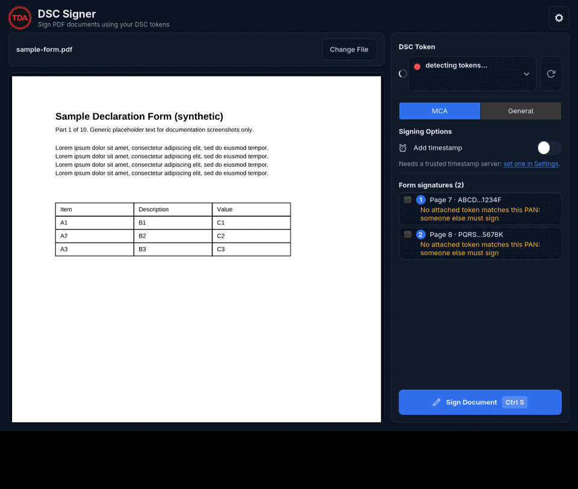
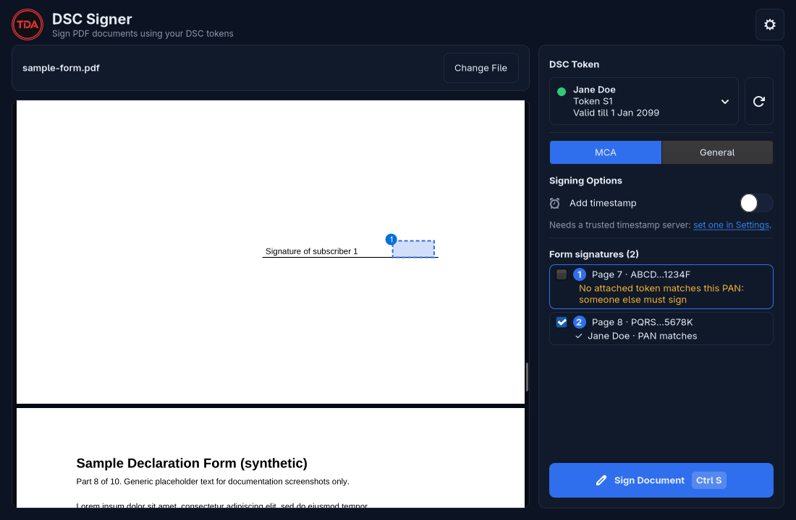
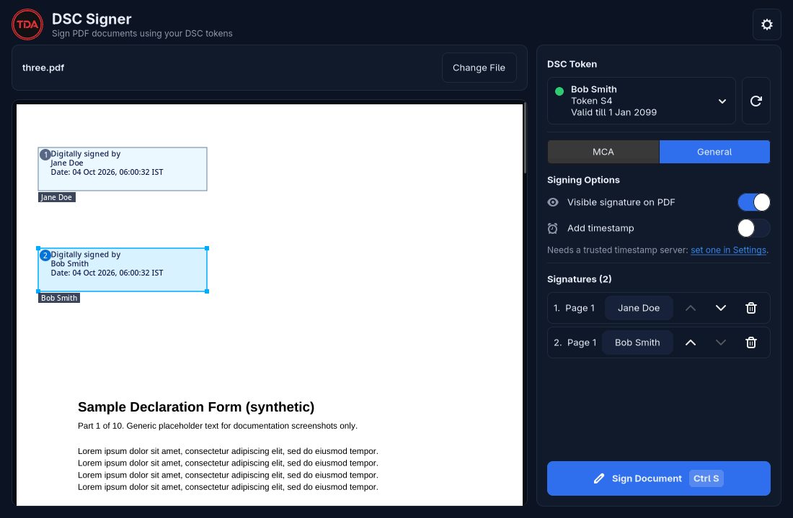
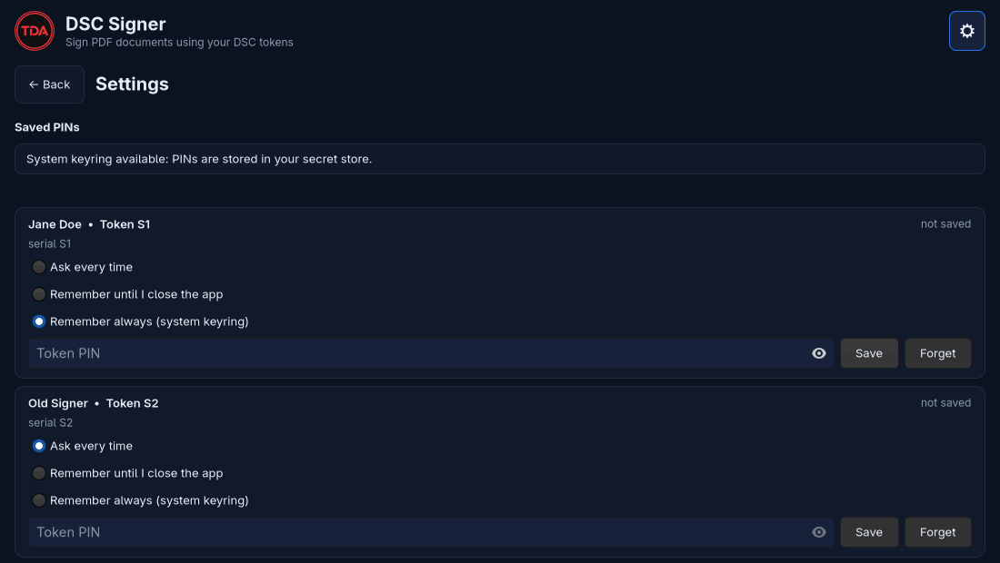

Sign PDFs and MCA forms with your DSC USB token on Linux
DSC Signer is a native GTK4 app and command line tool that signs PDFs with a Digital Signature Certificate held on a PKCS#11 USB token. It fills the empty signature fields of MCA forms and picks the token whose certificate matches each PAN.
yay -S tda-dsc-signer
What it does
Pick a PDF, pick the token, press Sign Document, enter the PIN. The signature is a PAdES (or adbe.pkcs7.detached) signature made by the token itself: the private key never leaves the device. The input file is never overwritten, and the result is checked after signing.



Features
MCA and general modes
Fill existing signature fields of a form, or draw a visible box (or none) on any PDF.
PAN matching
Each field is matched to the attached token automatically, and a mismatch is refused before any PIN is asked.
PIN safety
One login per signing action, never retried, with a guard after a wrong PIN and on the final try.
GUI and CLI
tda-dsc-signer and the short alias dsc-sign, with list, fields, sign, pin, trust and doctor.
Isolated driver
The vendor library runs in a separate subprocess and is only loaded from trusted paths.
Open source
GPL-3.0-or-later. No telemetry, no accounts, no bundled driver.
How MCA form signing works
MCA forms ship empty signature fields named sigfield<N>_<PAN>. An Indian DSC carries the SHA-256 of the holder's PAN as its certificate serialNumber, so DSC Signer hashes the PAN in each field name and matches it against the certificates on your tokens, automatically.
tda-dsc-signer fields FORM.pdf # fields, pages, masked PANs, matching token (no PIN)
tda-dsc-signer sign FORM.pdf --all-fields # sign every field a connected token matchesAcceptance by the MCA portal is not verified: its rules are not public to this tool. Read the full guide.
Supported tokens
InnaIT tokens are verified. Other PKCS#11 tokens are untested. No vendor driver is bundled: install yours separately. Details in supported tokens; if the token is not found, see troubleshooting.
Install
Arch Linux (AUR)
yay -S tda-dsc-signerFrom source
git clone https://github.com/TheDarkArtist/tda-dsc-signer
cd tda-dsc-signer
uv venv --system-site-packages --python /usr/bin/python3
make install
tda-dsc-signer doctorNeeds gtk4, poppler-glib, python-gobject, pcsclite and ccid. See the install guide.
Security
- PINs are typed each time by default and kept in memory for one call. Optional modes: session (memory only) or the system keyring (Secret Service). Never a file, log, command line or environment.
- No Secret Service running means keyring mode is refused: there is no plaintext fallback.
- The private key stays on the token; the vendor library is isolated in its own process.
Report vulnerabilities through GitHub private vulnerability reporting; see SECURITY.md.
FAQ
How do I sign a PDF with a DSC on Linux?
Install DSC Signer and your token vendor's PKCS#11 driver, plug in the token, open the PDF with tda-dsc-signer file.pdf, draw a signature box, press Sign Document and enter the token PIN. The signed copy is saved next to the original; the input is never overwritten. The same can be done from the command line with tda-dsc-signer sign.
Does it work with Class 3 DSC tokens?
DSC Signer signs with whichever signing certificate your token's PKCS#11 driver exposes. The certificate class is decided by the authority that issued it, not by this tool. Only InnaIT tokens have been tested.
Which tokens work?
InnaIT tokens are verified. Other PKCS#11 tokens (for example ePass2003, WatchData, eToken) are untested: they may work if their Linux driver is installed, but there is no confirmation. Reports are welcome on the issue tracker.
Is MCA acceptance guaranteed?
No. Acceptance by the MCA portal is not verified: the portal's rules are not public to this tool. The signature format used for form fields is configurable with --format so it can be changed if the portal expects something else.
Where are my PINs stored?
By default nowhere: the PIN is typed each time and kept in memory for one call. Optionally you can keep it for the session (memory only) or in the system Secret Service keyring (KeePassXC or gnome-keyring). A PIN is never written to a config file, log, command line or environment variable, and there is no plaintext fallback.
Is it affiliated with MCA?
No. DSC Signer is an independent project and is not affiliated with the Ministry of Corporate Affairs, the CCA or any certifying authority.